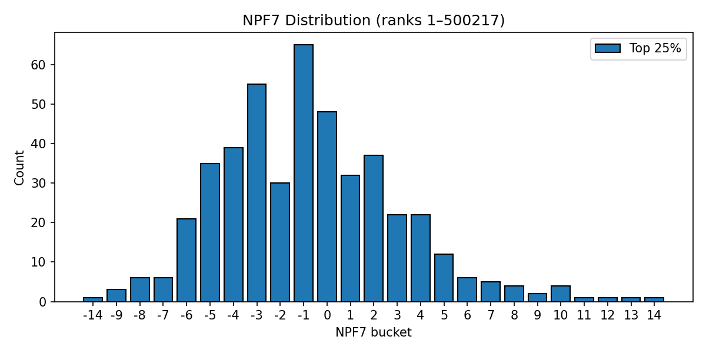
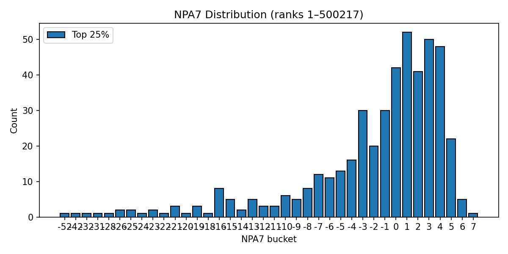
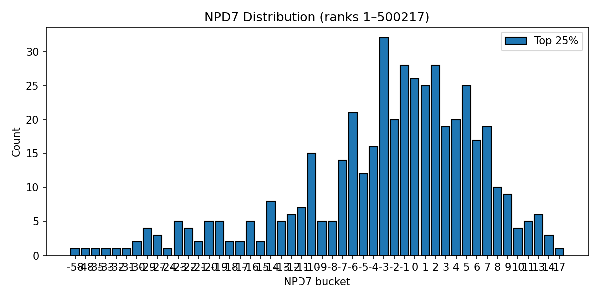

NPF7 / NPA7 / NPD7 — Season 2025, ranks 1–500217
NPF7 Histogram

NPA7 Histogram

NPD7 Histogram

NPF7 vs NPA7 Joint Distribution (static)

NPF7 vs NPA7 Joint Distribution (interactive)
NPF7 Leaders
Top 10 NPF7
| # | Rank | Name | Team | NPF7 | Matches |
|---|
| 1 | 4 | Matt Ramos | Purdue | +12.68 | 30 |
| 2 | 2 | Drake Ayala | Iowa | +11.06 | 23 |
| 3 | 3 | Luke Lilledahl | Penn State | +10.26 | 24 |
| 4 | 34 | Takeo Davis | Gardner-Webb | +10.05 | 28 |
| 5 | 41 | Dylan Ragusin | Michigan | +9.74 | 9 |
| 6 | 13 | Ben Davino | Ohio State | +9.00 | 19 |
| 7 | 17 | Nasir Bailey | Little Rock | +8.43 | 22 |
| 8 | 18 | Anthony Noto | Lock Haven | +8.06 | 30 |
| 9 | 34 | Anthony Molton | Campbell | +7.93 | 20 |
| 10 | 35 | Jacob Joyce | Brown | +6.33 | 9 |
Bottom 10 NPF7
| # | Rank | Name | Team | NPF7 | Matches |
|---|
| 1 | 79 | TJ Rodier | Presbyterian | -3.64 | 17 |
| 2 | 49 | Ben Monn | George Mason | -3.78 | 29 |
| 3 | 77 | Jared Brunner | Brown | -3.91 | 23 |
| 4 | 58 | Jake Manley | Cleveland State | -4.02 | 10 |
| 5 | 73 | Luke Passarelli | Davidson | -4.08 | 12 |
| 6 | 41 | Colby McBride | Appalachian State | -4.19 | 16 |
| 7 | 78 | Adan Benavidez | Kent State | -4.44 | 22 |
| 8 | 68 | Julian Dawson | Morgan State | -4.60 | 16 |
| 9 | 75 | Waylon Rogers | VMI | -5.85 | 15 |
| 10 | 76 | Brayden Adams | Presbyterian | -6.88 | 15 |
NPA7 Leaders
Top 10 NPA7
| # | Rank | Name | Team | NPA7 | Matches |
|---|
| 1 | 1 | Lucas Byrd | Illinois | +6.42 | 23 |
| 2 | 23 | Tyler Wells | Minnesota | +6.37 | 22 |
| 3 | 35 | Jacob Joyce | Brown | +5.99 | 9 |
| 4 | 6 | Sheldon Seymour | Lehigh | +5.90 | 26 |
| 5 | 7 | Caleb Smith | Nebraska | +5.89 | 29 |
| 6 | 7 | Connor McGonagle | Virginia Tech | +5.88 | 20 |
| 7 | 28 | Ethan Berginc | Army West Point | +5.73 | 28 |
| 8 | 17 | Nasir Bailey | Little Rock | +5.50 | 22 |
| 9 | 8 | Braxton Brown | Maryland | +5.40 | 28 |
| 10 | 27 | Tyler Ferrara | Cornell | +5.39 | 18 |
Bottom 10 NPA7
| # | Rank | Name | Team | NPA7 | Matches |
|---|
| 1 | 42 | Massey Odiotti | Northwestern | -3.29 | 24 |
| 2 | 62 | Kolton Barker | Ohio | -3.77 | 11 |
| 3 | 59 | Tyson Roach | Little Rock | -4.03 | 10 |
| 4 | 75 | Waylon Rogers | VMI | -4.15 | 15 |
| 5 | 76 | Brayden Adams | Presbyterian | -4.97 | 15 |
| 6 | 48 | Jack Parker | Bellarmine | -5.16 | 24 |
| 7 | 78 | Adan Benavidez | Kent State | -6.02 | 22 |
| 8 | 77 | Jared Brunner | Brown | -7.88 | 23 |
| 9 | 68 | Julian Dawson | Morgan State | -13.10 | 16 |
| 10 | 79 | TJ Rodier | Presbyterian | -14.75 | 17 |
NPD7 Leaders
Top 10 NPD7
| # | Rank | Name | Team | NPD7 | NPF7 | NPA7 | Off Matches | Def Matches |
|---|
| 1 | 4 | Matt Ramos | Purdue | +17.74 | +12.68 | +5.06 | 30 | 30 |
| 2 | 3 | Luke Lilledahl | Penn State | +14.43 | +10.26 | +4.17 | 24 | 24 |
| 3 | 17 | Nasir Bailey | Little Rock | +13.92 | +8.43 | +5.50 | 22 | 22 |
| 4 | 2 | Drake Ayala | Iowa | +13.79 | +11.06 | +2.74 | 23 | 23 |
| 5 | 13 | Ben Davino | Ohio State | +13.63 | +9.00 | +4.64 | 19 | 19 |
| 6 | 35 | Jacob Joyce | Brown | +12.32 | +6.33 | +5.99 | 9 | 9 |
| 7 | 34 | Takeo Davis | Gardner-Webb | +12.12 | +10.05 | +2.07 | 28 | 28 |
| 8 | 1 | Vincent Robinson | NC State | +11.57 | +6.25 | +5.32 | 24 | 24 |
| 9 | 2 | Troy Spratley | Oklahoma State | +11.07 | +5.70 | +5.36 | 26 | 26 |
| 10 | 6 | Sheldon Seymour | Lehigh | +10.50 | +4.60 | +5.90 | 26 | 26 |
Bottom 10 NPD7
| # | Rank | Name | Team | NPD7 | NPF7 | NPA7 | Off Matches | Def Matches |
|---|
| 1 | 48 | Jack Parker | Bellarmine | -3.17 | +1.98 | -5.16 | 24 | 24 |
| 2 | 59 | Tyson Roach | Little Rock | -5.24 | -1.21 | -4.03 | 10 | 10 |
| 3 | 62 | Kolton Barker | Ohio | -5.51 | -1.74 | -3.77 | 11 | 11 |
| 4 | 73 | Luke Passarelli | Davidson | -6.83 | -4.08 | -2.75 | 12 | 12 |
| 5 | 75 | Waylon Rogers | VMI | -10.01 | -5.85 | -4.15 | 15 | 15 |
| 6 | 78 | Adan Benavidez | Kent State | -10.46 | -4.44 | -6.02 | 22 | 22 |
| 7 | 77 | Jared Brunner | Brown | -11.79 | -3.91 | -7.88 | 23 | 23 |
| 8 | 76 | Brayden Adams | Presbyterian | -11.85 | -6.88 | -4.97 | 15 | 15 |
| 9 | 68 | Julian Dawson | Morgan State | -17.70 | -4.60 | -13.10 | 16 | 16 |
| 10 | 79 | TJ Rodier | Presbyterian | -18.39 | -3.64 | -14.75 | 17 | 17 |